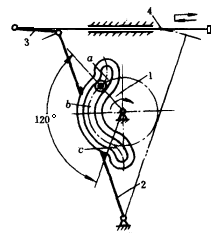
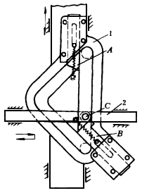
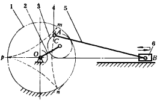

机构示意图
机构特性简介
单侧停歇曲线槽导杆机构

导杆2上的曲线导槽由三段圆弧a、b、c组成。当曲柄 1作主动件通过滚子带动导杆2摆动时，在图示的120°范围内，滚子的运动轨迹与曲线槽b段的圆弧相吻合，使导杆作单侧停歇。由导杆2通过连杆3带动滑杆4作单侧停歇的往复移动。该机构用于食品加工机械，作为物料的推进机构。如果导槽曲线由两段左右对称的曲率相同的圆弧组成，则可获得双侧停歇机构。该机构结构紧凑、制造简单、运动性能好，有急回作用， 但噪声大，不适用于高速。
移动凸轮间歇移动机构

主动凸轮1沿固定导轨作上下往复移动，凸轮上有三角形导槽，在其上下都装有活挡块A、B。当凸轮1向上移动时，从动件2上的滚子C是在凸轮三角导槽的铅垂槽内，从动件2停歇不动。当滚子C接触下部档块 B时，克服弹簧力推移挡块B后进入斜槽，随之挡块 B在弹簧力作用下复位挡住滚子C重回直槽。当凸轮 1向下移动时，滚子C沿斜槽移动，带动从动件2往复 移动。当滚子C接触活动挡块A时，克服弹簧力推移挡块A再次进人直槽。这样，凸轮的往复移动就可带动从动件作一端停歇的往复移动。
行星轮内摆线间歇移动机构

主动系杆2以使链C带动行星轮3运动，轮3与固定的内齿中心轮1啮合。两齿轮的齿数比为z3：z1= 1:3。在齿轮3的节圆上装有铰销4，通过连杆5驱使滑块6作单侧停歇的往复移动。因铰销4随齿轮3转动时作内摆线运动，如图虚线所示。取连杆5长AB等于mn段曲线的平均曲率半径，且使B点处在曲率中心的位置，则滑块6在右极限位置上近似停 歇，停歇时间相当于一个运动周期的1／3。